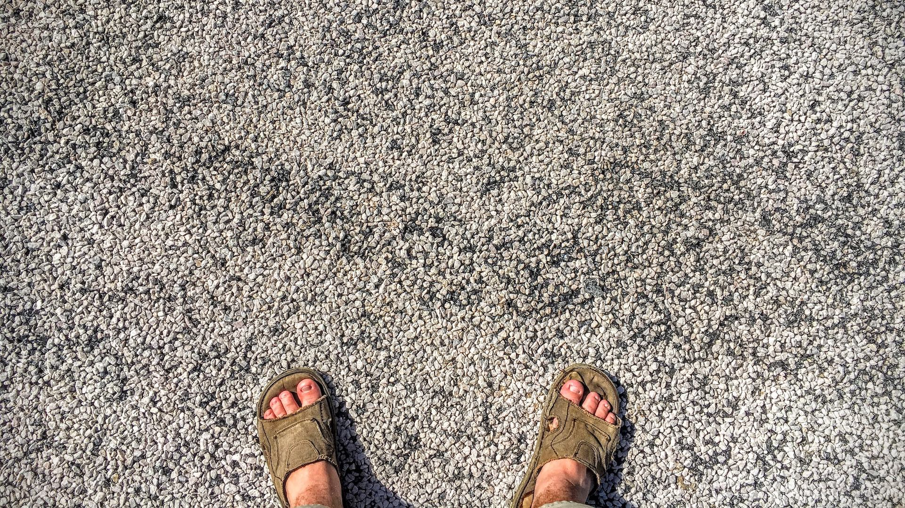

This is an odd page to explain the existence of on my website. Which is why the page is not really available by any normal method. There are no links to this page from navigation, external links, or any other location. So, if you've managed to find the page, bravo🥳, or thanks for watching the "Let's Code: Web Design" series on my YouTube channel.
If you're not familiar with the concept behind this page, or my YouTube series, I guess I could go ahead and explain, since, well... you've already made it this far anyway:
So, the idea behind this page is actually pretty simple. Like most people, pretty much all of the styling for my website exists inside of one CSS page that I link to from every HTML page. So in order to try and make the whole process easier, I started not, by designing HTML alone, but CSS & HTML in tandem before proceeding to any other step. This page, is the result of that process. Every class, every id, every little element that is incorporated at any point in my site, lives here, or at least a cousin of those elements live here.
This is actually one of my most cherished web design techniques. Even before I learned how to write my webiste myself, I still utalized a "Styling Page" or "Style Sheet" or whatever I decided to finally call the page before I uploaded it. It's a good way to get your barrings, at least ascetically speaking, before you even start building the bulk of your website. It's especially useful with online web design services like Squarespace, or Wix. But, I've also had a good amount of luck using the same technique with HTML & CSS.
Anyway I did go ahead and upload this page on the final, live version of my website, mostly just as a means for me to quickly acess it. So if you get any benifit from the page, cool, if not, just pretend you never found it and, (keep it secret, keep it safe).
Looks like I found a use for more headers after all
This book is largely concerned with Hobbits, and from its pages a reader may discover much of their character and a little of their history. Further information will also be found in the selection from the Red Book of Westmarch that has already been published, under the title of The Hobbit. That story was derived from the earlier chapters of the Red Book, composed by Bilbo himself, the first Hobbit to become famous in the world at large, and called by him There and Back Again, since they told of his journey into the East and his return: an adventure which later involved all the Hobbits in the great events of that Age that are here related.
Many, however, may wish to know more about this remarkable people from the outset, while some may not possess the earlier book. For such readers a few notes on the more important points are here collected from Hobbit-lore, and the first adventure is briefly recalled.
Hobbits are an unobtrusive but very ancient people, more numerous formerly than they are today; for they love peace and quiet and good tilled earth: a well-ordered and well-farmed countryside was their favourite haunt. They do not and did not understand or like machines more complicated than a forge -bellows, a water-mill, or a hand-loom, though they were skilful with tools. Even in ancient days they were, as a rule, shy of 'the Big Folk', as they call us, and now they avoid us with dismay and are becoming hard to find. They are quick of hearing and sharp-eyed, and though they are inclined to be fat and do not hurry unnecessarily, they are nonetheless nimble and deft in their movements. They possessed from the first the art of disappearing swiftly and silently, when large folk whom they do not wish to meet come blundering by; and this an they have developed until to Men it may seem magical. But Hobbits have never, in fact, studied magic of any kind, and their elusiveness is due solely to a professional skill that heredity and practice, and a close friendship with the earth, have rendered inimitable by bigger and clumsier races.
The quick brown fox jumps over the lazy dog.

Bug Report
Do not go gentle into that good night, old age shoud burn and rave at burn of day.